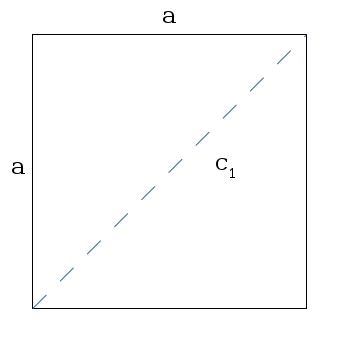
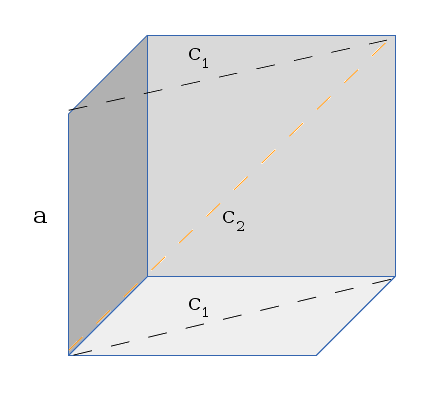

I'll Diagonol Yer Cube
Disclaimer - I take no responsibility for any mistakes, inaccuracies, or made up nonsense in the following entry. If you decide to follow this and think it makes sense and it turns out it doesn't, I'm sorry.
Here's something that bugged me the other day. I was reading through my old calculus textbook the other day (the kind with the answers to odd problems in the back, but zero explanation. Great). The problem goes:
Express the edge length of a cube as a function of the cube's diagonal length d. The short answer:
d / sqrt(3)where d is the diagonal length of the cube. Hooray.
The key to getting this problem right is understanding two things:
- What is the cube's diagonal?
- How do I determine what the cube's diagonal length is?
The longer answer (second question): First, lets start by finding the diagonal of a simple square. If we remember Pythagorean's Therom, you can determine the length of a diagonal with the form:
a2 + b2 = c2where a & b are two sides of a triangle, and c 1 is the hypotenuse of the triangle. Remember also that you can split a rectangle into a triangle by drawing an imaginary line diagonally across it. Also remember that the edges of a square are all equal. In other words, in our problem, a = b.
 A sample square with a line drawn diagonally The resulting form for finding this diagonal is:
c12 = a2 + a2
= 2a2
=> c1 = sqrt(2a2)
= sqrt(2) * a
In other words, because each side is the same, you end up with the constant sqrt(2) (two sides that are the same). This allows you to get the diagonal of a square by simply knowing one side.
Now, what does this give us for figuring out the diagonal of the cube. What we did above, in respect to a cube, is figured out the diagonal length of one of the faces of the cube. I drew it a few times, and realized you could think of it as the length of an imaginary face that runs through the cube. I attempted to draw this like so:
 An attempt at showing the imaginary inner-face of a cube Imagine that the cube has been cut in half diagonally, and you laid clear plastic wrap across the top of it. The gray walls are the back of the cube. We're trying to find the diagonal length of the plastic wrap we added to the top of this. In other words, we want to figure out what c 2 (the orange dashed line in the image) is. And you'll notice that now we know two pieces of info - What a is, and what c 1 is (from the previous part of the problem). Now that we have a visual that (hopefully might possible (but probably doesn't)) make sense, we can algebra at it a bit to find the solution:
Recall that: c12 = 2a2
c22 = a2 + c12
= a2 + 2a2
= 3a2
=> c2 = sqrt(3a2)
= sqrt(3) * a
=> a = c2 / sqrt(3)
So there you have it. To find a diagonal of a cube with sides of length a, multiply a by the square root of 3. If you happen to know the diagonal length and need to find an edge length, divide the edge length by the square root of 3. I double checked this value by looking at the
'space diagonal'
on
the Wikipedia page on cubes
.
But don't worry kids, if you don't happen to realize any of this, you'll just get the problem wrong with no good explanation. This kind of stuff becomes a lot more enjoyable when there's no pressure of time or grades. :)